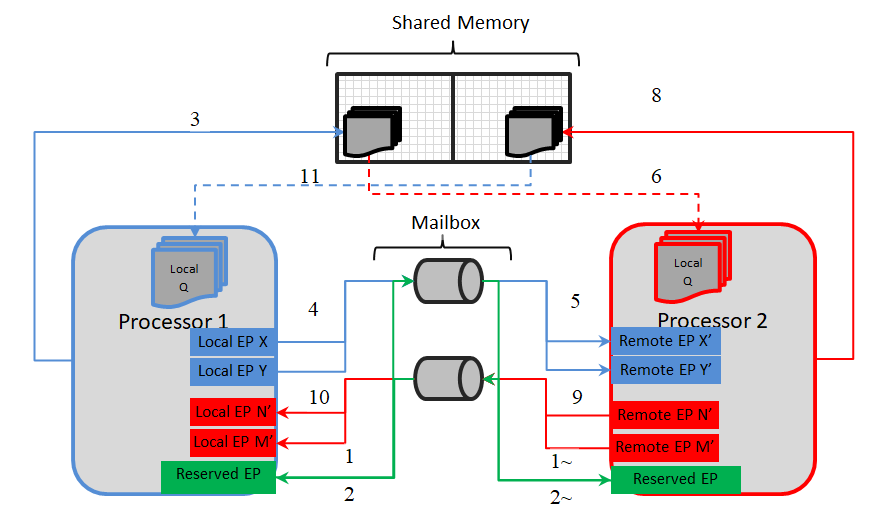
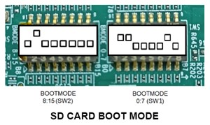
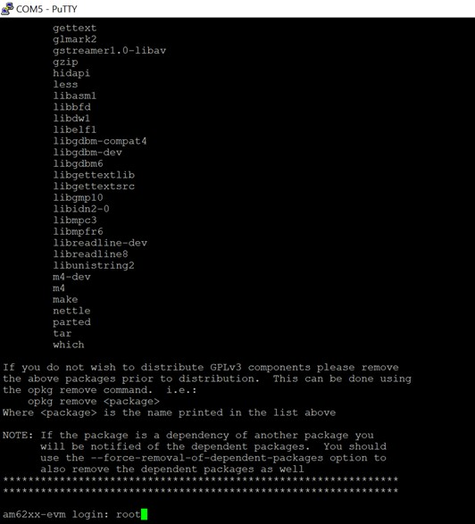
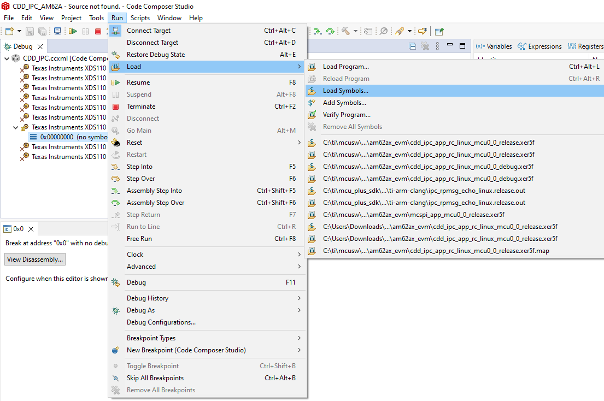
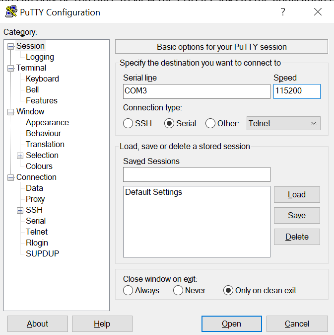
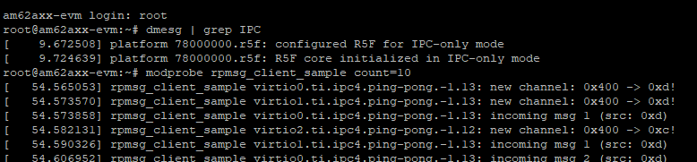
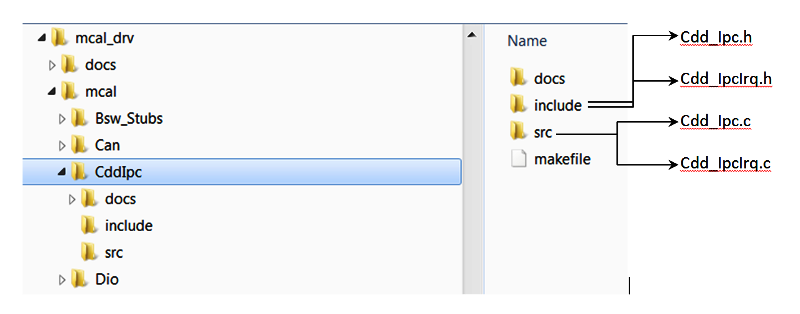
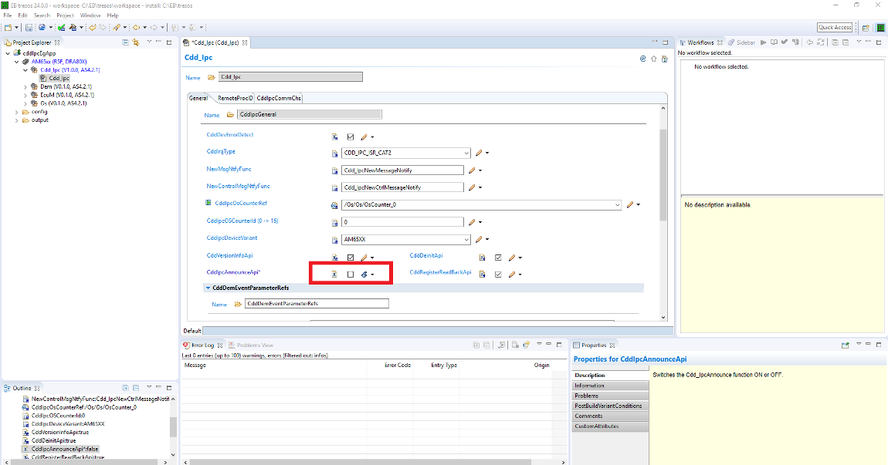
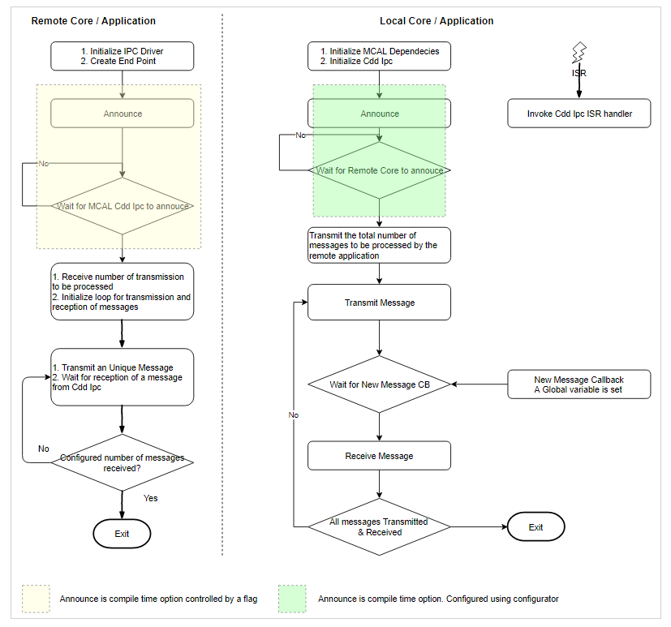

|
MCUSW
|
|
MCUSW
|
This document details Cdd Ipc module implementations
Cdd Ipc modules allows core hosting MCAL/AUTOSAR to communicate with other cores (processing entities, with-in SoC) hosting PDK based IPC driver as well as HLOS Linux IPC driver. This driver could be used to transmit and receive variable length messages between cores, via logical communication channel ID's. Can be mapped to Sender-Receiver AUTOSAR interface, for data oriented communication between core that host AUTOSAR / NON AUTOSAR processing entities.
Some of key points to note
Please refer the Cdd IPC design page, which is part of CSP.[2]

As depicted in architecture figure above, Cdd Ipc implementation relies on mailbox, shared memory to transport messages between cores. The shared memory & other associated memories are provided via the configurator, Refer [Shared Memory Configuration] (Refer to Design Document provided in CSP) for details.
It's recommended to not change the recommended configuration for these parameters, unless the user comprehends methods to change memory location (and/or size) of the shared memory.A communication channel provides a logical communication channel between two processors. Identified uniquely by an un-signed sequential integer, represented by configurator defined [symbolic name] (Refer to Design Document provided in CSP).
There could be multiple unique communication channel between any given 2 cores.
There are two primary identifiers, identifying the end-points for a core. This is used by the driver to identify the source / destination of a message.
Notes on EndPoints
The demo application by default uses control channel/Announce API's to notify remote cores of service availability. This feature could be turned OFF Refer for steps to turn OFF It is an endpoint which can be used to send or receive control messages, primarily used by Announce API�s to notify remote cores about the availability of service.
Please refer to the SOC User Manual for detail.
The following table lists the interrupt details, required for applications to register ISR to receive interrupt on the core that hosts MCAL/IPC
Please note the SCI Client / DMSC Firmware API are invoked to route interrupt to R5FSS0_0 (via routers or no routers)
| Host Core | Remote Core | Cluster | User | Int No | Comments |
|---|---|---|---|---|---|
| R5FSS0_0 | M4FSS0_0 | 0 | 0 | 254 | ISR Cdd_IpcIrqMbxFromRC |
| R5FSS0_0 | A53SS_1 | 0 | 1 | 254 | ISR Cdd_IpcIrqMbxFromRC |
Please note the SCI Client / DMSC Firmware API are invoked to route interrupt to MCU 0_0 (via routers or no routers)
| Host Core | Remote Core | Cluster | User | Int No for cluster 2 | Comments |
|---|---|---|---|---|---|
| MCU_R5FSS0_0 | A53SS0_0 | 2 | 0 | 242 | ISR Cdd_IpcIrqMbxFromMcu_10 |
Please note the SCI Client / DMSC Firmware API are invoked to route interrupt to MCU 0_0 (via routers or no routers)
| Host Core | Remote Core | Cluster | User | Int No for cluster 1 | Comments |
|---|---|---|---|---|---|
| MCU_R5FSS0_0 | A53SS0_0 | 1 | 0 | 241 | ISR Cdd_IpcIrqMbxFromA53SS_0_0 |
The design document details the various configurable parameters of this implementation, please refer section Configurator of [2] (Refer to Design Document provided in CSP)
As noted from the previous MCAL implementation, some of the critical configuration registers could potentially be corrupted by other entities (s/w or h/w). One of the recommended detection methods would be to periodically read-back the configuration and confirm configuration is consistent. The service API defined below shall be implemented to enable this detection
| Description | Comments | |
| Service Name | Cdd_IpcRegisterReadBack | Can potentially be turned OFF (Refer to Design Document provided in CSP) |
| Syntax | uint32 Cdd_IpcRegisterReadBack ( uint32 remoteProcId, P2VAR(Cdd_IpcRegRbValues, AUTOMATIC, CDD_APP_DATA) pRegArgs) | E_OK: Register read back has been done, E_NOT_OK: Register read back failed |
| Service ID | NA | |
| Sync / Async | Sync | |
| Reentrancy | Reentrant | |
| Parameter in | remoteProcId | Remote Processor ID. |
| Parameters out | pRegArgs - Pointer to where to store the readback values. If this pointer is NULL_PTR, then the API will return E_NOT_OK. | |
| Return Value | Std_ReturnType | E_OK, E_NOT_OK |
Service to get Mailbox state is FULL or not
| Description | Comments | |
| Service Name | Cdd_IpcGetMailboxStatus | Service to get Mailbox state is FULL or not |
| Syntax | uint32 Cdd_IpcGetMailboxStatus(uint32 chId) | E_OK: Register read back has been done, E_NOT_OK: Register read back failed |
| Service ID | CDD_IPC_SID_MAILBOX_STATE | |
| Sync / Async | Sync | |
| Reentrancy | Reentrant | |
| Parameter in | remoteProcId | Remote ID. |
| Parameters out | None | |
| Return Value | uint32 | Returns the mailbox state |
The driver doesn't configure the functional clock and power for the Mailbox module. It is expected that the Secondary Bootloader (SBL) powers up the required modules. Please refer SBL documentation.
Note that, this implementation will NOT reset the Mailbox. Un Expected/stale messages could be delivered by the driver. It's recommended to drain stale messages before announcing the availability via service API Cdd_IpcAnnounce () if enabled.
Please follow steps detailed in section (Build) to build library or example.
The MCAL example application could be built with the command
$ cd (SDK Install Directory)/mcusw.xx.yy.zz.bb/build $ make cdd_ipc_app CORE=mcu2_1 BOARD=(SOC)_evm SOC=(SOC) -sj
Navigate to /build/Rules.make and set the CDD_IPC_LINUX_BUILD to yes The MCAL example application could be built with the command
$ cd (SDK Install Directory)/mcusw.xx.yy.zz.bb/build $ make cdd_ipc_app_rc_linux CORE=(CORE_VARIABLE) BOARD=(SOC)_evm SOC=(SOC) CDD_IPC_LINUX_BUILD=yes -sj
The possible variable values are
The remote core application implementation is available at (SDK Install Directory)/mcusw.xx.yy.zz.bb/mcuss_demos/inter_core_comm/ipc_remote
Note: You can build remote core applications with freertos. Ensure to use the same OS example and remote core application.
Please follow steps detailed in section (Build) to build library or example
Refer IPC Profiling Application for details on the profiling application.
$ cd (SDK Install Directory)/mcusw.xx.yy.zz.bb/build $ make cdd_ipc_profile_app CORE=mcu2_1 BUILD_OS_TYPE=freertos -sj
Refer IPC Profiling Application for details on the profiling application.
$ cd (SDK Install Directory)/mcusw.xx.yy.zz.bb/build $ make cdd_ipc_profile_app_rc_linux CORE=mcu1_0 BUILD_OS_TYPE=freertos CDD_IPC_LINUX_BUILD=yes -sj
The MCAL Unit Test application could be built with the command
$ cd (SDK Install Directory)/mcusw.xx.yy.zz.bb/build $ make -s cdd_ipc_test BOARD=(SOC)_evm SOC=(SOC) BUILD_PROFILE=release CORE=mcu2_1 BUILD_OS_TYPE=baremetal MCAL_CONFIG=x
| CDD IPC(2_1) | config_1 | config_2 | config_3 | config_4 | config_5 |
| REMOTE(2_0) | ipc_remote_app | ipc_remote_app | ipc_remote_2chnls_app | ipc_remote_app | ipc_remote_test1 |
To run the CddIpcApp for RTOS to RTOS
To run the CddIpcRprocLinuxApp on mcu1_0
To run the CddIpcRprocLinuxApp on mcu2_1
To run the CddIpcRprocLinuxApp on mcu0_0
Please refer the SOC user manual for cdd_ipc_app.
The MCAL example application could be built with the command
$ cd (SDK Install Directory)/mcusw.xx.yy.zz.bb/build $ gmake -s cdd_ipc_app BOARD=am62x_evm SOC=am62x BUILD_PROFILE=release CORE=mcu0_0 BUILD_OS_TYPE=baremetal $ OR $ gmake -s cdd_ipc_app BOARD=am62x_evm SOC=am62x BUILD_PROFILE=debug CORE=mcu0_0 BUILD_OS_TYPE=baremetal
$ cd (SDK Install Directory)/mcusw.xx.yy.zz.bb/build $ gmake -s cdd_ipc_app BOARD=am62ax_evm SOC=am62ax BUILD_PROFILE=release CORE=mcu0_0 BUILD_OS_TYPE=baremetal $ OR $ gmake -s cdd_ipc_app BOARD=am62ax_evm SOC=am62ax BUILD_PROFILE=debug CORE=mcu0_0 BUILD_OS_TYPE=baremetal
$ cd (SDK Install Directory)/mcusw.xx.yy.zz.bb/build $ gmake -s cdd_ipc_app BOARD=am62px_evm SOC=am62px BUILD_PROFILE=release CORE=mcu0_0 BUILD_OS_TYPE=baremetal $ OR $ gmake -s cdd_ipc_app BOARD=am62px_evm SOC=am62px BUILD_PROFILE=debug CORE=mcu0_0 BUILD_OS_TYPE=baremetal
The remote core application implementation is available at -(SDK Install Directory)/mcu_plus_sdk_am62x_xx_yy_zz/examples/drivers/ipc/ipc_rpmsg_echo/am62x-sk/m4fss0-0_nortos. please ensure that gmake is avaible in the mentioned path.
The M4 remote core example application could be built with the command
$ cd (SDK Install Directory)/mcu_plus_sdk_am62x_xx_yy_zz/examples/drivers/ipc/ipc_rpmsg_echo/am62x-sk/m4fss0-0_nortos
$ gmake -s all
Note:- Comment/remove the IpcNotify_syncAll API's from the path (SDK Install Directory)/mcu_plus_sdk_am62x_xx_yy_zz/examples/drivers/ipc/ipc_rpmsg_echo/ipc_notify_echo.c.
- Vring address and Vring size should match with host and remote application.
Steps to run
Please follow steps detailed in section (Build) to build library or example.
The MCAL example application could be built with the command
$ cd (SDK Install Directory)/mcusw.xx.yy.zz.bb/build $ gmake -s cdd_ipc_app_rc_linux BOARD=am62x_evm SOC=am62x BUILD_PROFILE=debug core=mcu0_0 CDD_IPC_LINUX_BUILD=yes $ OR $ gmake -s cdd_ipc_app_rc_linux BOARD=am62x_evm SOC=am62x BUILD_PROFILE=release core=mcu0_0 CDD_IPC_LINUX_BUILD=yes Note: Vring address and Vring size should match with host and remote application.
$ cd (SDK Install Directory)/mcusw.xx.yy.zz.bb/build $ gmake -s cdd_ipc_app_rc_linux BOARD=am62ax_evm SOC=am62ax BUILD_PROFILE=release CORE=mcu0_0 BUILD_OS_TYPE=baremetal CDD_IPC_LINUX_BUILD=yes $ OR $ gmake -s cdd_ipc_app_rc_linux BOARD=am62ax_evm SOC=am62ax BUILD_PROFILE=debug CORE=mcu0_0 BUILD_OS_TYPE=baremetal CDD_IPC_LINUX_BUILD=yes Note: Vring address and Vring size should match with host and remote application.
$ cd (SDK Install Directory)/mcusw.xx.yy.zz.bb/build $ gmake -s cdd_ipc_app_rc_linux BOARD=am62px_evm SOC=am62px BUILD_PROFILE=release CORE=mcu0_0 BUILD_OS_TYPE=baremetal CDD_IPC_LINUX_BUILD=yes $ OR $ gmake -s cdd_ipc_app_rc_linux BOARD=am62px_evm SOC=am62px BUILD_PROFILE=debug CORE=mcu0_0 BUILD_OS_TYPE=baremetal CDD_IPC_LINUX_BUILD=yes Note: Vring address and Vring size should match with host and remote application.
Note:- Please ensure that for building the Linux application, the above mentioned variable is set to yes and for building the CDD IPC application ensure that the variable is set to no as this variable is responsible for the Demo configurations that will be included as a part of the driver during build, and also before building the application please use the gmake -s allclean command
From the above link download the ti-processor-sdk-linux-am62xx-evm-08.04.01.09-Linux-x86-Install.bin, make the bin file as executable and install it on your Linux system.[Please consider latest linux installer]
AM62X Links: - https://www.ti.com/tool/download/PROCESSOR-SDK-LINUX-AM62X
Note: Above mentioned are linux boot method. Alternate SBL mode boot method is given in the below section.
Ensure that the board is in SD-card boot mode.

Insert the SD card and connect the JTAG and UART cables via USB and open the terminal. Power on the board via USB and login into the board when prompted with username root.

Copy the cdd_ipc_app_rc_linux_mcu0_0_(BUILD_PROFILE).xer5f file in (SDK Install Directory)/mcusw.xx.yy.zz.bb/binary/cdd_ipc_app_rc_linux/bin/(SoC)_evm to root->lib->firmware in the SD card which contains the Linux image(Linux system required windows file system not supported).
Inside the folder a file named am62a-mcu-r5f0_0-fw will be present, remove that file and rename the copied .xer5f file to am62a-mcu-r5f0_0-fw.
The A53 core will boot the firmware in the MCU R5 core automatically once the SD card is inserted in the board and powered. The logs can be seen using any terminal serially(UART).
Note: Above mentioned steps are linux boot method. Alternate SBL mode boot method is given in the below section.



Note: Download Linux installer from below link before to start point no.3 AM62X -https://www.ti.com/tool/PROCESSOR-SDK-AM62X?keyMatch=AM62X%20PROCESSOR%20SDK AM62AX -https://www.ti.com/tool/PROCESSOR-SDK-AM62A AM62AX -https://www.ti.com/tool/PROCESSOR-SDK-AM62P
1) refer the below link to convert MCAL binary to Out2RPRC AM62Px-file:///C:/ti/mcu_plus_sdk_am62px_09_01_00_39/docs/api_guide_am62px/TOOLS_BOOT.html AM62AX-file:///C:/ti/mcu_plus_sdk_am62ax_09_01_00_39/docs/api_guide_am62ax/TOOLS_BOOT.html AM62X-file:///C:/ti/mcu_plus_sdk_am62x_09_01_00_39/docs/api_guide_am62x/TOOLS_BOOT.html
(Ex:C:/ti/sysconfig_1.18.0/nodejs/node.exe elf2rprc.js cdd_ipc_app_rc_linux_mcu0_0_debug.out)
Note: Use follwing path in place of ($NODE) in the command C:/ti/sysconfig_1.18.0/nodejs/node.exe
2) refer the below link under Multi-core Image Gen for converting Out2RPRC to appimage file AM62Px-file:///C:/ti/mcu_plus_sdk_am62px_09_01_00_39/docs/api_guide_am62px/TOOLS_BOOT.html AM62AX-file:///C:/ti/mcu_plus_sdk_am62ax_09_01_00_39/docs/api_guide_am62ax/TOOLS_BOOT.html AM62AX-file:///C:/ti/mcu_plus_sdk_am62x_09_01_00_39/docs/api_guide_am62x/TOOLS_BOOT.html (Ex:C:/ti/sysconfig_1.18.0/nodejs/node.exe multicoreImageGen.js –devID 55 –out cdd_ipc_app_rc_linux_mcu0_0_debug.appimage cdd_ipc_app_rc_linux_mcu0_0_debug.rprc@5)
3) use the below command in the same path ${SDK_INSTALL_PATH}/tools/boot/multicoreImageGen accordingly to device
AM62Px- python C:/ti/mcu_plus_sdk_am62px_09_01_00_39/tools/boot/signing/appimage_x509_cert_gen.py –bin cdd_ipc_app_rc_linux_mcu0_0_debug.appimage –authtype 0 –loadaddr 84000000 –key C:/ti/mcu_plus_sdk_am62px_09_01_00_39/tools/boot/signing/app_degenerateKey.pem –output cdd_ipc_app_rc_linux_mcu0_0_debug.appimage.hs_fs AM62AX- python C:/ti/mcu_plus_sdk_am62ax_09_01_00_39/tools/boot/signing/appimage_x509_cert_gen.py –bin cdd_ipc_app_rc_linux_mcu0_0_debug.appimage –authtype 0 –loadaddr 84000000 –key C:/ti/mcu_plus_sdk_am62ax_09_01_00_39/tools/boot/signing/app_degenerateKey.pem –output cdd_ipc_app_rc_linux_mcu0_0_debug.appimage.hs_fs AM62X- python C:/ti/mcu_plus_sdk_am62x_09_01_00_39/tools/boot/signing/appimage_x509_cert_gen.py –bin cdd_ipc_app_rc_linux_mcu0_0_debug.appimage –authtype 0 –loadaddr 84000000 –key C:/ti/mcu_plus_sdk_am62x_09_01_00_39/tools/boot/signing/app_degenerateKey.pem –output cdd_ipc_app_rc_linux_mcu0_0_debug.appimage.hs_fs (Note: point no.3 is applicable only to generate for hs/hs_fs appimage)
Various objects of this implementation (e.g. variables, functions, constants) are defined under different sections. The linker command file at (Examples Linker File (Select memory location to hold example binary)) defines separate section for these objects. When the driver is integrated, it is expected that these sections are created and placed in appropriate memory locations. (Locations of these objects depend on the system design and performance needs)
| Section | CDD_IPC_CODE | CDD_IPC_VAR | CDD_IPC_VAR_NOINIT | CDD_IPC_CONST | CDD_IPC_CONFIG |
| CDD_IPC_DATA_NO_INIT_UNSPECIFIED_SECTION (.data) | USED | ||||
| CDD_IPC_DATA_INIT_32_SECTION | USED | ||||
| CDD_IPC_TEXT_SECTION | USED | ||||
| CDD_IPC_DATA_NO_INIT_8_SECTION | USED | ||||
| CDD_IPC_CONFIG_SECTION | USED | ||||
| CDD_IPC_ISR_TEXT_SECTION | USED | ||||
| CDD_IPC_CONFIG_SECTION | USED |
This implementation depends on the DET in order to report development errors and can be turned OFF. Refer to the Development Error Reporting section for detailed error codes.
This implementation requires 1 level of exclusive access to guard critical sections. Invokes SchM_Enter_Cdd_Ipc_IPC_EXCLUSIVE_AREA_0(), SchM_Exit_Cdd_Ipc_IPC_EXCLUSIVE_AREA_0() to enter critical section and exit.
In the example implementation (SchM_Cdd_Ipc.c), all the interrupts on CPU are disabled. However, disabling of the enabled Mailbox related interrupts should suffice.

IPC demo applications use atleast 2 applications running on 2 different cores. Namely ipc_remote_app & cdd_ipc_app OR cdd_ipc_profile_app , these two applications would have to be re built when this features requires to be turned OFF

Regenerate the configuration and copy the same into location specified above
Profiling Application
Development errors are reported to the DET using the service Det_ReportError(), when enabled. The driver interface files (Cdd_IpcCfg.h shown in the driver directory structure of the File Structure section)
Refer Design Document for detailed [Error Codes] (Refer to Design Document provided in CSP)
Production error are reported to DET via Det_ReportError(). Only the error codes in the Cdd Ipc driver specifications are reported which are listed in [] (Refer to Design Document provided in CSP) Back To Top
The AUTOSAR BSW Eth Driver specification details the APIs [[2] (Refer to Design Document provided in CSP)]
The flow chart below depicts the demo application

rpmsg_client_sample virtio0.ti.ipc4.ping-pong.-1.11: new channel: 0x400 -> 0xb!
rpmsg_client_sample virtio0.ti.ipc4.ping-pong.-1.11: incoming msg 1 (src: 0xb)
rpmsg_client_sample virtio0.ti.ipc4.ping-pong.-1.11: incoming msg 2 (src: 0xb)
rpmsg_client_sample virtio0.ti.ipc4.ping-pong.-1.11: incoming msg 3 (src: 0xb)
rpmsg_client_sample virtio0.ti.ipc4.ping-pong.-1.11: incoming msg 4 (src: 0xb)
rpmsg_client_sample virtio0.ti.ipc4.ping-pong.-1.11: incoming msg 5 (src: 0xb)
rpmsg_client_sample virtio0.ti.ipc4.ping-pong.-1.11: incoming msg 6 (src: 0xb)
rpmsg_client_sample virtio0.ti.ipc4.ping-pong.-1.11: incoming msg 7 (src: 0xb)
rpmsg_client_sample virtio0.ti.ipc4.ping-pong.-1.11: incoming msg 8 (src: 0xb)
rpmsg_client_sample virtio0.ti.ipc4.ping-pong.-1.11: incoming msg 9 (src: 0xb)
rpmsg_client_sample virtio0.ti.ipc4.ping-pong.-1.11: incoming msg 10 (src: 0xb)
rpmsg_client_sample virtio0.ti.ipc4.ping-pong.-1.11: goodbye! rpmsg_client_sample virtio0.ti.ipc4.ping-pong.-1.11: new channel: 0x400 -> 0xb!
rpmsg_client_sample virtio0.ti.ipc4.ping-pong.-1.11: incoming msg 1 (src: 0xb)
rpmsg_client_sample virtio0.ti.ipc4.ping-pong.-1.11: incoming msg 2 (src: 0xb)
rpmsg_client_sample virtio0.ti.ipc4.ping-pong.-1.11: incoming msg 3 (src: 0xb)
rpmsg_client_sample virtio0.ti.ipc4.ping-pong.-1.11: incoming msg 4 (src: 0xb)
rpmsg_client_sample virtio0.ti.ipc4.ping-pong.-1.11: incoming msg 5 (src: 0xb)
rpmsg_client_sample virtio0.ti.ipc4.ping-pong.-1.11: incoming msg 6 (src: 0xb)
rpmsg_client_sample virtio0.ti.ipc4.ping-pong.-1.11: incoming msg 7 (src: 0xb)
rpmsg_client_sample virtio0.ti.ipc4.ping-pong.-1.11: incoming msg 8 (src: 0xb)
rpmsg_client_sample virtio0.ti.ipc4.ping-pong.-1.11: incoming msg 9 (src: 0xb)
rpmsg_client_sample virtio0.ti.ipc4.ping-pong.-1.11: incoming msg 10 (src: 0xb)
rpmsg_client_sample virtio0.ti.ipc4.ping-pong.-1.11: goodbye! CDD_IPC_APP : CDD IPC MCAL Version Info
CDD_IPC_APP :---------------------
CDD_IPC_APP : Vendor ID : 44
CDD_IPC_APP : Module ID : 255
CDD_IPC_APP : SW Major Version : 1
CDD_IPC_APP : SW Minor Version : 0
CDD_IPC_APP : SW Patch Version : 0
CDD_IPC_APP :
CDD_IPC_APP : Sample Application - STARTS !!!
CDD_IPC_APP : Received ti.ipc4.ping-pong as ctrl MSG from MCU 1 1
CDD_IPC_APP : Received ping 0 Iteration 10 from MCU 1 1
CDD_IPC_APP : Received ping 1 Iteration 9 from MCU 1 1
CDD_IPC_APP : Received ping 2 Iteration 8 from MCU 1 1
CDD_IPC_APP : Received ping 3 Iteration 7 from MCU 1 1
CDD_IPC_APP : Received ping 4 Iteration 6 from MCU 1 1
CDD_IPC_APP : Received ping 5 Iteration 5 from MCU 1 1
CDD_IPC_APP : Received ping 6 Iteration 4 from MCU 1 1
CDD_IPC_APP : Received ping 7 Iteration 3 from MCU 1 1
CDD_IPC_APP : Received ping 8 Iteration 2 from MCU 1 1
CDD_IPC_APP : Received ping 9 Iteration 1 from MCU 1 1
CDD_IPC_APP : Received ti.ipc4.ping-pong as ctrl MSG from MCU 2 0
CDD_IPC_APP : Received ping 0 Iteration 10 from MCU 2 0
CDD_IPC_APP : Received ping 1 Iteration 9 from MCU 2 0
CDD_IPC_APP : Received ping 2 Iteration 8 from MCU 2 0
CDD_IPC_APP : Received ping 3 Iteration 7 from MCU 2 0
CDD_IPC_APP : Received ping 4 Iteration 6 from MCU 2 0
CDD_IPC_APP : Received ping 5 Iteration 5 from MCU 2 0
CDD_IPC_APP : Received ping 6 Iteration 4 from MCU 2 0
CDD_IPC_APP : Received ping 7 Iteration 3 from MCU 2 0
CDD_IPC_APP : Received ping 8 Iteration 2 from MCU 2 0
CDD_IPC_APP : Received ping 9 Iteration 1 from MCU 2 0
CDD_IPC_APP : Received ti.ipc4.ping-pong as ctrl MSG from MPU 1 0
CDD_IPC_APP : Received ping 0 Iteration 10 from MPU 1 0
CDD_IPC_APP : Received ping 1 Iteration 9 from MPU 1 0
CDD_IPC_APP : Received ping 2 Iteration 8 from MPU 1 0
CDD_IPC_APP : Received ping 3 Iteration 7 from MPU 1 0
CDD_IPC_APP : Received ping 4 Iteration 6 from MPU 1 0
CDD_IPC_APP : Received ping 5 Iteration 5 from MPU 1 0
CDD_IPC_APP : Received ping 6 Iteration 4 from MPU 1 0
CDD_IPC_APP : Received ping 7 Iteration 3 from MPU 1 0
CDD_IPC_APP : Received ping 8 Iteration 2 from MPU 1 0
CDD_IPC_APP : Received ping 9 Iteration 1 from MPU 1 0
CDD_IPC_APP : Transmitted and Received 10 times
CDD_IPC_APP : Sample Application - Completes !!! [BLAZAR_Cortex_M4F_1] [IPC RPMSG ECHO] Remote Core waiting for messages from main core ... !!!
[MAIN_Cortex_R5_0_0]
CDD_IPC_APP : CDD IPC MCAL Version Info
CDD_IPC_APP :---------------------
CDD_IPC_APP : Vendor ID : 44
CDD_IPC_APP : Module ID : 255
CDD_IPC_APP : SW Major Version : 9
CDD_IPC_APP : SW Minor Version : 0
CDD_IPC_APP : SW Patch Version : 0
Sciclient direct init..... SUCCESS
CDD_IPC_APP :
CDD_IPC_APP : Sample Application - STARTS !!!
first ping sent to all coresping sent to all coresinside loop for M4FSS0_0 remote core rec msgCDD_IPC_APP : Received
Iteration 10 from M4FSS0_0
inside loop for M4FSS0_0 remote core rec msgCDD_IPC_APP : Received ping 1 Iteration 9 from M4FSS0_0
inside loop for M4FSS0_0 remote core rec msgCDD_IPC_APP : Received ping 9 Iteration 8 from M4FSS0_0
inside loop for M4FSS0_0 remote core rec msgCDD_IPC_APP : Received ping 8 Iteration 7 from M4FSS0_0
inside loop for M4FSS0_0 remote core rec msgCDD_IPC_APP : Received ping 7 Iteration 6 from M4FSS0_0
inside loop for M4FSS0_0 remote core rec msgCDD_IPC_APP : Received ping 6 Iteration 5 from M4FSS0_0
inside loop for M4FSS0_0 remote core rec msgCDD_IPC_APP : Received ping 5 Iteration 4 from M4FSS0_0
inside loop for M4FSS0_0 remote core rec msgCDD_IPC_APP : Received ping 4 Iteration 3 from M4FSS0_0
inside loop for M4FSS0_0 remote core rec msgCDD_IPC_APP : Received ping 3 Iteration 2 from M4FSS0_0
inside loop for M4FSS0_0 remote core rec msgCDD_IPC_APP : Received ping 2 Iteration 1 from M4FSS0_0
CDD_IPC_APP : Transmitted and Received 10 times
CDD_IPC_APP : Sample Application - Completes !!!
[BLAZAR_Cortex_M4F_1] [IPC RPMSG ECHO] Received and echoed 10 messages ... !!!
All tests have passed!! root@am62xx-lp-evm:~# modprobe rpmsg_client_sample count=10
[ 282.459714] rpmsg_client_sample virtio0.ti.ipc4.ping-pong.-1.13: new channel: 0x401 -> 0xd!
[ 282.468510] rpmsg_client_sample virtio1.ti.ipc4.ping-pong.-1.13: new channel: 0x401 -> 0xd!
[ 282.477992] rpmsg_client_sample virtio1.ti.ipc4.ping-pong.-1.13: incoming msg 1 (src: 0xd)
root@am62xx-lp-evm:~# [ 282.488239] rpmsg_client_sample virtio1.ti.ipc4.ping-pong.-1.13: incoming msg 2 (src: 0xd)
[ 282.497935] rpmsg_client_sample virtio1.ti.ipc4.ping-pong.-1.13: incoming msg 3 (src: 0xd)
[ 282.506932] rpmsg_client_sample virtio1.ti.ipc4.ping-pong.-1.13: incoming msg 4 (src: 0xd)
[ 282.515923] rpmsg_client_sample virtio1.ti.ipc4.ping-pong.-1.13: incoming msg 5 (src: 0xd)
[ 282.524910] rpmsg_client_sample virtio1.ti.ipc4.ping-pong.-1.13: incoming msg 6 (src: 0xd)
[ 282.533904] rpmsg_client_sample virtio1.ti.ipc4.ping-pong.-1.13: incoming msg 7 (src: 0xd)
[ 282.543607] rpmsg_client_sample virtio1.ti.ipc4.ping-pong.-1.13: incoming msg 8 (src: 0xd)
[ 282.552907] rpmsg_client_sample virtio1.ti.ipc4.ping-pong.-1.13: incoming msg 9 (src: 0xd)
[ 282.561905] rpmsg_client_sample virtio1.ti.ipc4.ping-pong.-1.13: incoming msg 10 (src: 0xd)
[ 282.570276] rpmsg_client_sample virtio1.ti.ipc4.ping-pong.-1.13: goodbye!
root@am62xx-lp-evm:~# rpmsg_char_simple -r 15 -n 10
Created endpt device rpmsg-char-15-1632, fd = 4 port = 1026
Exchanging 10 messages with rpmsg device ti.ipc4.ping-pong on rproc id 15 ...
Sending message #0: hello there 0!
Receiving message #0: hello there 0!
Sending message #1: hello there 1!
Receiving message #1: hello there 1!
Sending message #2: hello there 2!
Receiving message #2: hello there 2!
Sending message #3: hello there 3!
Receiving message #3: hello there 3!
Sending message #4: hello there 4!
Receiving message #4: hello there 4!
Sending message #5: hello there 5!
Receiving message #5: hello there 5!
Sending message #6: hello there 6!
Receiving message #6: hello there 6!
Sending message #7: hello there 7!
Receiving message #7: hello there 7!
Sending message #8: hello there 8!
Receiving message #8: hello there 8!
Sending message #9: hello there 9!
Receiving message #9: hello there 9!
Communicated 10 messages successfully on rpmsg-char-15-1632
root@am62xx-lp-evm:~# 1. LINUX TERMINAL LOGS
root@am62axx-evm:~# rpmsg_char_simple -r 0 -n 10
Created endpt device rpmsg-char-0-699, fd = 4 port = 1025
Exchanging 10 messages with rpmsg device ti.ipc4.ping-pong on rproc id 0 ...
Sending message #0: hello there 0!
Receiving message #0: hello there 0!
Sending message #1: hello there 1!
Receiving message #1: hello there 1!
Sending message #2: hello there 2!
Receiving message #2: hello there 2!
Sending message #3: hello there 3!
Receiving message #3: hello there 3!
Sending message #4: hello there 4!
Receiving message #4: hello there 4!
Sending message #5: hello there 5!
Receiving message #5: hello there 5!
Sending message #6: hello there 6!
Receiving message #6: hello there 6!
Sending message #7: hello there 7!
Receiving message #7: hello there 7!
Sending message #8: hello there 8!
Receiving message #8: hello there 8!
Sending message #9: hello there 9!
Receiving message #9: hello there 9!
Communicated 10 messages successfully on rpmsg-char-0-699
TEST STATUS: PASSED
root@am62axx-evm:~# modprobe rpmsg_client_sample count=10
[ 93.561808] rpmsg_client_sample virtio0.ti.ipc4.ping-pong.-1.13: new channel: 0x401 -> 0xd!
[ 93.570354] rpmsg_client_sample virtio2.ti.ipc4.ping-pong.-1.13: new channel: 0x401 -> 0xd!
[ 93.570358] rpmsg_client_sample virtio0.ti.ipc4.ping-pong.-1.13: incoming msg 1 (src: 0xd)
[ 93.570567] rpmsg_client_sample virtio0.ti.ipc4.ping-pong.-1.13: incoming msg 2 (src: 0xd)
[ 93.579001] rpmsg_client_sample virtio1.ti.ipc4.ping-pong.-1.13: new channel: 0x401 -> 0xd!
[ 93.587086] rpmsg_client_sample virtio2.ti.ipc4.ping-pong.-1.13: incoming msg 1 (src: 0xd)
[ 93.612028] rpmsg_client_sample virtio0.ti.ipc4.ping-pong.-1.13: incoming msg 3 (src: 0xd)
[ 93.620325] rpmsg_client_sample virtio1.ti.ipc4.ping-pong.-1.13: incoming msg 1 (src: 0xd)
root@am62axx-evm:~# [ 93.628624] rpmsg_client_sample virtio2.ti.ipc4.ping-pong.-1.13: incoming msg 2 (src: 0xd)
[ 93.638620] rpmsg_client_sample virtio0.ti.ipc4.ping-pong.-1.13: incoming msg 4 (src: 0xd)
[ 93.646920] rpmsg_client_sample virtio1.ti.ipc4.ping-pong.-1.13: incoming msg 2 (src: 0xd)
[ 93.655222] rpmsg_client_sample virtio1.ti.ipc4.ping-pong.-1.13: incoming msg 3 (src: 0xd)
[ 93.663504] rpmsg_client_sample virtio2.ti.ipc4.ping-pong.-1.13: incoming msg 3 (src: 0xd)
[ 93.671782] rpmsg_client_sample virtio0.ti.ipc4.ping-pong.-1.13: incoming msg 5 (src: 0xd)
[ 93.680075] rpmsg_client_sample virtio1.ti.ipc4.ping-pong.-1.13: incoming msg 4 (src: 0xd)
[ 93.688365] rpmsg_client_sample virtio1.ti.ipc4.ping-pong.-1.13: incoming msg 5 (src: 0xd)
[ 93.696644] rpmsg_client_sample virtio2.ti.ipc4.ping-pong.-1.13: incoming msg 4 (src: 0xd)
[ 93.704921] rpmsg_client_sample virtio0.ti.ipc4.ping-pong.-1.13: incoming msg 6 (src: 0xd)
[ 93.713204] rpmsg_client_sample virtio1.ti.ipc4.ping-pong.-1.13: incoming msg 6 (src: 0xd)
[ 93.721494] rpmsg_client_sample virtio1.ti.ipc4.ping-pong.-1.13: incoming msg 7 (src: 0xd)
[ 93.729779] rpmsg_client_sample virtio2.ti.ipc4.ping-pong.-1.13: incoming msg 5 (src: 0xd)
[ 93.738074] rpmsg_client_sample virtio0.ti.ipc4.ping-pong.-1.13: incoming msg 7 (src: 0xd)
[ 93.746367] rpmsg_client_sample virtio1.ti.ipc4.ping-pong.-1.13: incoming msg 8 (src: 0xd)
[ 93.754657] rpmsg_client_sample virtio1.ti.ipc4.ping-pong.-1.13: incoming msg 9 (src: 0xd)
[ 93.762947] rpmsg_client_sample virtio2.ti.ipc4.ping-pong.-1.13: incoming msg 6 (src: 0xd)
[ 93.771229] rpmsg_client_sample virtio0.ti.ipc4.ping-pong.-1.13: incoming msg 8 (src: 0xd)
[ 93.779514] rpmsg_client_sample virtio1.ti.ipc4.ping-pong.-1.13: incoming msg 10 (src: 0xd)
[ 93.787871] rpmsg_client_sample virtio1.ti.ipc4.ping-pong.-1.13: goodbye!
[ 93.794677] rpmsg_client_sample virtio2.ti.ipc4.ping-pong.-1.13: incoming msg 7 (src: 0xd)
[ 93.802956] rpmsg_client_sample virtio0.ti.ipc4.ping-pong.-1.13: incoming msg 9 (src: 0xd)
[ 93.811251] rpmsg_client_sample virtio2.ti.ipc4.ping-pong.-1.13: incoming msg 8 (src: 0xd)
[ 93.819536] rpmsg_client_sample virtio0.ti.ipc4.ping-pong.-1.13: incoming msg 10 (src: 0xd)
[ 93.827887] rpmsg_client_sample virtio0.ti.ipc4.ping-pong.-1.13: goodbye!
[ 93.834753] rpmsg_client_sample virtio2.ti.ipc4.ping-pong.-1.13: incoming msg 9 (src: 0xd)
[ 93.843129] rpmsg_client_sample virtio2.ti.ipc4.ping-pong.-1.13: incoming msg 10 (src: 0xd)
[ 93.851539] rpmsg_client_sample virtio2.ti.ipc4.ping-pong.-1.13: goodbye! am62pxx-evm login: root
[ 18.520766] audit: type=1006 audit(25.740:10): pid=623 uid=0 old-auid=4294967295 auid=0 tty=(none) old-ses=4294967295 ses=3 res=1
[ 18.532568] audit: type=1300 audit(25.740:10): arch=c00000b7 syscall=64 success=yes exit=1 a0=8 a1=fffff01f7938 a2=1 a3=ffff96357020 items=0 ppid=1 pid=623 auid=0 uid=0 gid=0 euid=0 suid=0 fsuid=0 egid=0 sgid=0 fsgid=0 tty=(none) ses=3 comm="(systemd)" exe="/lib/systemd/systemd" key=(null)
[ 18.558272] audit: type=1327 audit(25.740:10): proctitle="(systemd)"
[ 18.580371] audit: type=1334 audit(25.800:11): prog-id=11 op=LOAD
[ 18.586596] audit: type=1300 audit(25.800:11): arch=c00000b7 syscall=280 success=yes exit=8 a0=5 a1=ffffe9d0d160 a2=78 a3=0 items=0 ppid=1 pid=623 auid=0 uid=0 gid=0 euid=0 suid=0 fsuid=0 egid=0 sgid=0 fsgid=0 tty=(none) ses=3 comm="systemd" exe="/lib/systemd/systemd" key=(null)
[ 18.612171] audit: type=1327 audit(25.800:11): proctitle="(systemd)"
[ 18.618726] audit: type=1334 audit(25.800:12): prog-id=11 op=UNLOAD
[ 18.625221] audit: type=1334 audit(25.800:13): prog-id=12 op=LOAD
[ 18.631400] audit: type=1300 audit(25.800:13): arch=c00000b7 syscall=280 success=yes exit=8 a0=5 a1=ffffe9d0d200 a2=78 a3=0 items=0 ppid=1 pid=623 auid=0 uid=0 gid=0 euid=0 suid=0 fsuid=0 egid=0 sgid=0 fsgid=0 tty=(none) ses=3 comm="systemd" exe="/lib/systemd/systemd" key=(null)
[ 18.656168] audit: type=1327 audit(25.800:13): proctitle="(systemd)"
[ 19.007681] sh (629): drop_caches: 1
root@am62pxx-evm:~# modprobe rpmsg_client_sample count=10
[ 22.136097] rpmsg_client_sample virtio0.ti.ipc4.ping-pong.-1.13: new channel: 0x401 -> 0xd!
[ 22.144613] rpmsg_client_sample virtio0.ti.ipc4.ping-pong.-1.13: incoming msg 1 (src: 0xd)
[ 22.144715] rpmsg_client_sample virtio1.ti.ipc4.ping-pong.-1.13: new channel: 0x401 -> 0xd!
[ 22.152989] rpmsg_client_sample virtio0.ti.ipc4.ping-pong.-1.13: incoming msg 2 (src: 0xd)
[ 22.153042] rpmsg_client_sample virtio0.ti.ipc4.ping-pong.-1.13: incoming msg 3 (src: 0xd)
root@am62pxx-evm:~# [ 22.178277] rpmsg_client_sample virtio0.ti.ipc4.ping-pong.-1.13: incoming msg 4 (src: 0xd)
[ 22.188127] rpmsg_client_sample virtio0.ti.ipc4.ping-pong.-1.13: incoming msg 5 (src: 0xd)
[ 22.196446] rpmsg_client_sample virtio1.ti.ipc4.ping-pong.-1.13: incoming msg 1 (src: 0xd)
[ 22.204779] rpmsg_client_sample virtio1.ti.ipc4.ping-pong.-1.13: incoming msg 2 (src: 0xd)
[ 22.213115] rpmsg_client_sample virtio1.ti.ipc4.ping-pong.-1.13: incoming msg 3 (src: 0xd)
[ 22.221445] rpmsg_client_sample virtio0.ti.ipc4.ping-pong.-1.13: incoming msg 6 (src: 0xd)
[ 22.229760] rpmsg_client_sample virtio1.ti.ipc4.ping-pong.-1.13: incoming msg 4 (src: 0xd)
[ 22.238088] rpmsg_client_sample virtio1.ti.ipc4.ping-pong.-1.13: incoming msg 5 (src: 0xd)
[ 22.246386] rpmsg_client_sample virtio1.ti.ipc4.ping-pong.-1.13: incoming msg 6 (src: 0xd)
[ 22.254686] rpmsg_client_sample virtio1.ti.ipc4.ping-pong.-1.13: incoming msg 7 (src: 0xd)
[ 22.262990] rpmsg_client_sample virtio1.ti.ipc4.ping-pong.-1.13: incoming msg 8 (src: 0xd)
[ 22.271287] rpmsg_client_sample virtio1.ti.ipc4.ping-pong.-1.13: incoming msg 9 (src: 0xd)
[ 22.279579] rpmsg_client_sample virtio1.ti.ipc4.ping-pong.-1.13: incoming msg 10 (src: 0xd)
[ 22.287938] rpmsg_client_sample virtio1.ti.ipc4.ping-pong.-1.13: goodbye!
[ 22.294763] rpmsg_client_sample virtio0.ti.ipc4.ping-pong.-1.13: incoming msg 7 (src: 0xd)
[ 22.303070] rpmsg_client_sample virtio0.ti.ipc4.ping-pong.-1.13: incoming msg 8 (src: 0xd)
[ 22.311384] rpmsg_client_sample virtio0.ti.ipc4.ping-pong.-1.13: incoming msg 9 (src: 0xd)
[ 22.319703] rpmsg_client_sample virtio0.ti.ipc4.ping-pong.-1.13: incoming msg 10 (src: 0xd)
[ 22.328069] rpmsg_client_sample virtio0.ti.ipc4.ping-pong.-1.13: goodbye!
| Sl No | Specification | Comment / Link |
|---|---|---|
| 1 | AUTOSAR 4.3.1 | AUTOSAR Specification for CDD Driver & Integration Intranet Link |
 1.8.15
1.8.15